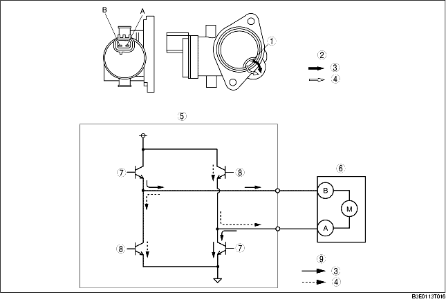

• The shutter valve actuator is mainly composed of a DC motor and gear.
• The variable tumble shutter valve opens and closes by the operation of the motor activated by the PCM. Operation of the motor via activated directional switching switches the variable tumble shutter valve in the direction of open or closed.
• The variable tumble shutter valve opens and closes by the operation of the motor activated by the PCM. Operation of the motor via activated directional switching switches the variable tumble shutter valve in the direction of open or closed.
• When 12 V is applied to the variable tumble shutter valve actuator terminal A, the gear moves counterclockwise and the variable tumble shutter valve closes. Conversely, when 12 V is applied to the variable tumble shutter valve actuator terminal B, the gear moves clockwise and the variable tumble shutter valve opens.
|
12 V terminal
|
Gear rotation direction
|
Shutter valve operation
|
|---|---|---|
|
A
|
Counterclockwise
|
Open→ Close
|
|
B
|
Clockwise
|
Close→ Open
|

.